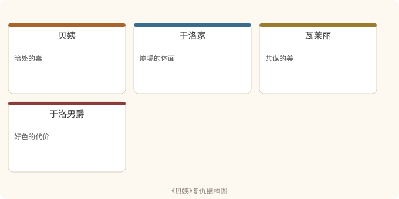

贝姨
一、基本信息
| 作者 | 巴尔扎克 |
|---|---|
| 成书/出版 | 1846年（作者页 B039/B014 口径：贝姨（1846）） Honoré de Balzac — Encyclopaedia Britannica（百科全书） |
| 国别/地区 | 法国 |
| 时代 | 近代 · 19世纪 |
| 体裁 | 长篇小说 |
| 语言 | 法语 |

《贝姨》复仇结构图（主题·结构图）
二、创作背景
作者页（B039/B014）：巴尔扎克 major_works 载'贝姨（1846）'（B039 作者页定位，详见 gaolaotou 条核对）。
题材（通说待核）：穷亲戚贝姨的隐性报复——于洛男爵家庭的瓦解。
三、内容脉络
贝姨借瓦莱丽实施复仇——于洛家的性崩溃（通说待核）。
四、主要人物表
| 人物 | 身份 | 说明 |
|---|---|---|
| 贝特（贝姨） | 穷亲戚 | 暗处的复仇者（通说待核） |
| 于洛男爵 | 好色军官 | （通说待核） |
五、主题与艺术特点
- 报复的隐秘经济学（通说）。
- 好色的家庭崩塌（通说待核）。
- '穷人道德'的黑暗（通说待核）。
六、影响与评论
- 作者页：巴尔扎克晚期代表作（B039/B014 作者页口径）。
Honoré de Balzac — Encyclopaedia Britannica（百科全书） - 与《邦斯舅舅》并称'穷亲戚'双璧（通说待核）。
Honoré de Balzac — Encyclopaedia Britannica（百科全书）
七、阅读建议
难点
- 复现人物（于洛家族）。
- 恶的层次。
- 《贝姨》（人民文学出版社傅雷译本，通说待核）。
- 法文原版（公有领域）。
《人间喜剧》晚期必读。
八、待核实
- 1846年出版核对。
- 贝特/于洛人名核对。
- 傅雷译本信息待核。